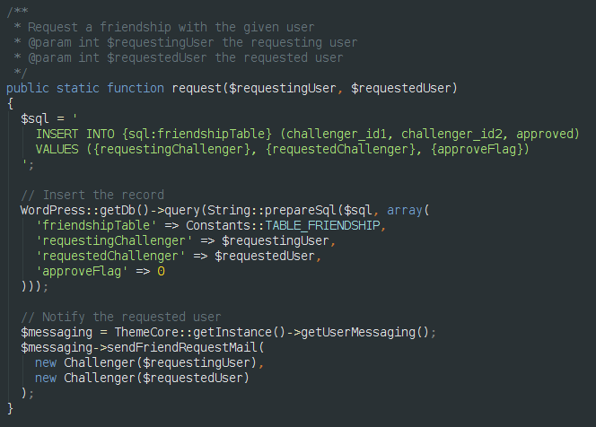

OOP in WordPress Themes
Like, really.
Created by @tforrer and @msebel,
Software engineers at Blogwerk.
Anatomy of a WordPress theme
- Predefined template hierarchy
- No defined structure for resources
- No (real) container for business logic
The template hierarchy

Disadvantages
If you need to provide a customer theme with many different templates and business logic, you'll face the following problems:
- Everything is at root level: Page templates, template parts and the WordPress theme templates.
- With 50 files, you'll have difficulties finding the right one.
- You might even get naming problems.
Why bother?
- Fun fact: We're a WordPress agency. That's why.
We have 150+ individual customer solutions based on WordPress. What we want (need!) is reusability, standards, clean object oriented code, a meaningful file structure.
Example: twentyfourteen
|
Request lifecycle

Theme object
Views
What's the goal? In complex themes you may have a lot more views to store: ajax dialogs, backend views, widget content, template parts, page templates, etc.
Now how do we organize this?
Yo mamma already told you:
Go clean up your room
- Organize your files in a meaningfull way
- Put the WordPress theme files where you need them
- Use *more* template parts
- Add other HTML only things like Ajax Dialogs
Example: mobilesport.ch

|
Resources
What about everything else? (S)CSS, scripts, language files, images, fonts? You could do what you want here, but let us give you some advice.
The file structure
|
Good to go: basic theme
Example
simple view template
|
Or you could use
Twig
as a templating system
Component-based theme extensions
- Hello1
- Hello2
- Hello3
Handling new requirements
Encapsulation
Another example of encapsulation. Recently we've had a severe case of "oh that class starts growing too big".
class Challenger extends Entity
- Naming is important: We chose "challenger" instead of "user"
- Has methods like "getProfileLink", "getDevice" or "getAvatar"
Encapsulation
Then we wanted to add friendship functionality to the challenger entity. While developing, we noticed, that it's a bit more complex than expected.
And suddenly the challenger class grew from 195 lines to around 500 lines.
Solution: Separating the concerns, by giving the friendship their own entity class. Now we have a 200 and 250 line class.
Encapsulation
Encapsulation
Examples
Website for ENSI based on WordPress
Individual Software on top of WordPress
A complex website: ensi.ch relaunch
What about child themes?
stepchallenge.ch: Individual software
Connect your Fitbit, Jawbone or Withings device and challenge other users on the platform. The app should motivate end users to have more activity that their opponent over a period of time.
Why. On Earth.
Would someone use WordPress to code a web app?
Well, why not?
- Most important: Namespaces, structure, components.
- Second: I know WordPress inside out.
- Make use of WordPress: Rewriting, page templates, static content, cache functions. Extend the backend with custom admin capabilities (e.g. challenge- or user management).
- Load balanced WordPress infrastructure.
Let's have a look at some code
The theme has around 40 views and 30 classes.
And there's still a lot of work to do.
Outlook: Tests, dependencies
Check us out
on Github
github.com/blogwerk/oop-theme-plugingithub.com/blogwerk/oop-theme-example